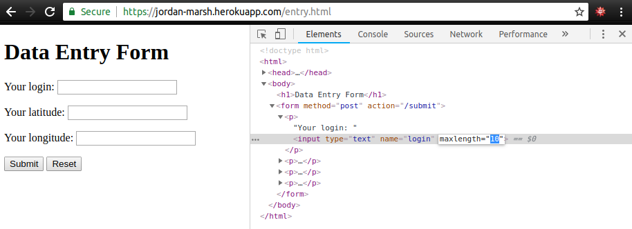

Security Assessment of "Not Foursquare"
Written by Jeremy Kanovsky • July 1, 2018
Introduction
This assessment tests and examines the potential security flaws in the web app hosted at https://jordan-marsh.herokuapp.com. This web apprication was made by Ming Chow for the Tufts Comp 20 Web Security lab. The app's function is to allow users to make an entry with their login, latitude, and longitude. This information was then posted to the website's homepage, and accessible via a json link and a string query. Various security flaws make this application unstable and unusable for any form of public use as it can be easily sabotaged.
In this report, a vulnerability is counted as something that makes the web application potentially damaging for the server it is hosted on, or something potentially dangerous to front end users accessing the app. It is also something that causes the app to function differently as intended as a result of a coding or styling flaw. This report is in no way extensive of all the flaws, and only covers some of the most ovbious and the most catastrophic.
Methodology
This app was initially examined using "black-box" testing. This is an examination using only the information available to a potential attacker, and was done using the live web app hosted on Heroku. Several tools such as web crawlers were also used to find other webpages hosted on the same app. The source code for the server was then examined to reveal other flaws and potential logical errors which could cause the server to crash or become unstable.
Abstract of Findings
This web application has several gaping vulnerabilities that allow users to cause fatal damage to the server and to other users accessing the pages. User input was not sanatised correctly allowing scripts to be stored and executed from the server, logical errors in the code caused specific pages to crash, and poor coding practices caused the existence of additional flaws
Issues Found
- HTML Injection
Issue: HTML injection into MongoDB
Description: HTML code can be injected into the login section of the entry page. To do so, the maximum length of the entry allowed in the box must first be changed from 10 to a value greater than the length of the desired input. Next, any HTML code can be entered. In this example, a script HTML tag was used to enter JavaScript code. When the user visited the homepage of the application, the code entered would be executed as the page tried to load the value from the database.
Proof of Vulnerability: 

Potential Resolution: To resolve this rather disasterous issue, the input to the MongoDB must be sanitized. There are two steps to resolve the issue. First, the limit on characters that can be entered should be checked server-side instead of client-side. As it stands, the user can change the value at will and the server will not reject longer strings. The second issue is that HTML code can be entered into the database and then executed when the homepage loads. To do this, there are npm packages designed for this specific issue. The link is https://www.npmjs.com/package/mongo-sanitize and https://www.npmjs.com/package/express-mongo-sanitize.
- Latitude/Longitude Values
Issue: Logical error in server code
Description: On the entry page of the web app, there is a logical error in the code that causes specific latitude and longitude inputs to cause the page to crash. This can be witnessed in the following line of server code:
if (lat >= -90.0 && lat <= 90 && lng >= -180 && lng <= 180)
If a value outside the ranges specified in the code, the server will not know how to treat the input. A case has not been defined as to what to do if the input is outside that range.
Proof of Vulnerability: This vulnerability can be seen in the code snippet above, and in the screenshot below.
Potential Resolution: To fix this bug a very simple else statement is needed. It could be as simple as redirecting the user to a page stating there is an issue with their input.
- Database Spam with /submit
Issue: Users can add values to the database with a curl request to the submit extension of the website.
Description: Using the curl command, users are able to add entries to the entry database quickly and easily. Normally this wouldn't be an issue, except the command can be exploited. Using a small script allows users to automate the process to add upwards of 30 database entries per second. The code for this is show below:
#!/bin/bash
while true; do
curl --silent --output /dev/null --data "login=HELLO_MING&lat=1&lng=1" https://jordan-marsh.herokuapp.com/submit
done
When this bash script is run in multiple instances, or by multiple computers, the number of entries could be upward of 250,000 over a two hour period (see proof below). This exploit would not only clog the website, but cause the database to grow to massive sizes. Additionally, further exploits could be embedded in the entries. For example, if the user entered an HTML injection (see exploit above) that caused the page to redirect to itself, the users browser could slow to a crawl, or become unusable entirely.
Proof of Vulnerability: 
Potential Resolution: To resolve this issue, the number of entries to the database should be limited. For example, the number of entries from a specific IP address could be limited to a certain number per hour, or the rate at which they are entered could be limited. Additionally a CAPTCHA could be implemented so as to avoid malicious scripting.
Conclusion